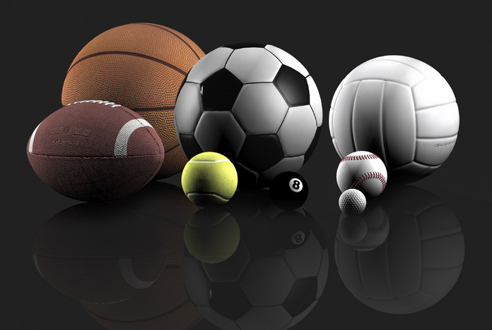

Спортивные игры:
Спортивные игры сформировались на основе игровой деятельности, присущей человеку.
Игра занимает большое место в жизни человека. В детском возрасте игра - основной вид
деятельности, средство подготовки к жизни, к труду, эффективное средство физического воспитания.
Игры, связанные со спортом, базирующиеся на соревновании, выделились в отдельную группу - спортивные игры,
или игровые виды спорта.
Особенности спортивных игр определяются спецификой соревновательной деятельности, которая и отличает их
от других видов спорта.
Соревновательное противоборство в игре происходит по установленным правилам с использованием присущих
только конкретной игре соревновательных действий - приемов игры (техники). При этом обязательным является
наличие соперника.
